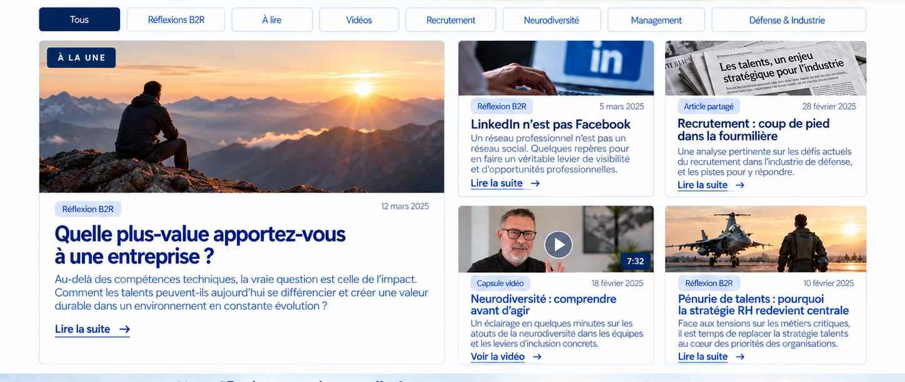

Quelle plus-value apportez-vous à une entreprise ?
Parcours, contribution et valeur réelle au-delà du titre de poste.
Lire →RÉFLEXIONS • MÉDIAS • REGARDS • EXPÉRIENCES
Prendre du recul sur le recrutement, le travail et les trajectoires professionnelles.
Parcours, contribution et valeur réelle au-delà du titre de poste.
Lire →Réflexion sur l’usage professionnel du réseau.
Lire →Questionner quelques automatismes devenus trop confortables.
Lire →Des clés pour sortir des idées reçues.
Voir →Quand la compréhension du besoin redevient stratégique.
Lire →Un premier échange de 30 minutes permet de clarifier le besoin et d’identifier la suite la plus pertinente.

Filtres : Tous, Réflexions B2R, À lire, Vidéos, Recrutement, Neurodiversité, Management, Défense & Industrie.